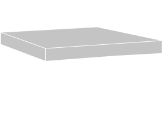
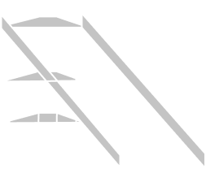

DEX TWISK
MY BLUEPRINT
TEAMWORK
Teamwork vind ik een keypunt in het werk. Het zorgt voor vershillende ideeën en perspectieven. In mijn visie kan dit zorgen voor efficientie en een beter eindresultaat.
SPEC 1
PUNCTUAL
Ik ben altijd punctueel. Het zorgt voor proffesionaliteit en bereidheid. Ik word niet gelimteerd door tijd en werk efficient om het eidnresultaat te behalen binnen de opgegeven deadlines.
SPEC 2
CREATIVE
Mijn vermogen om snel toepasbare ideeën te bedenken voor bestaande vraagstukken en daarop concepten te bedenken zorgt voor efficientie en kwaliteit..
SPEC 3
ENERGETIC
Mijn energieke gedrag zorgt ervoor dat ik met een positieve houding naar mijn projecten kijk. Het zorgt ook voor een speelsheid die ik los kan laten in mijn ideeën.
SPEC 4
CALM
Ik kan mijn hoofd koel houden als er problemen ontstaan. Ik heb het vermogen om rustig te kunnen analyseren en tot oplossingen te komen.
